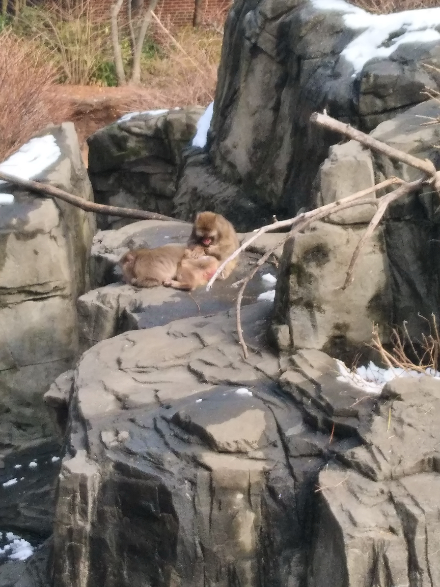
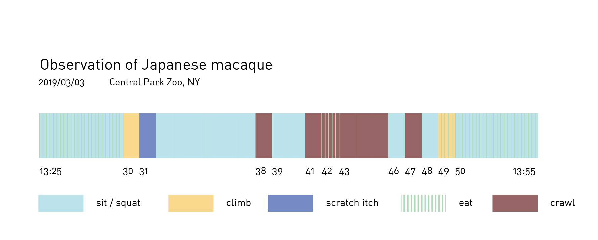
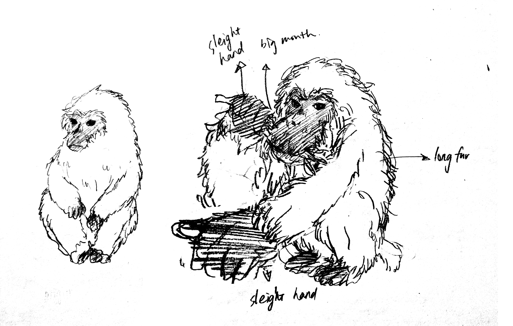

Central Park Zoo visit
I chose Japanese macaque as the object of observation cause their image of taking hot spring impressed a lot. Luckily I observed two monkey groomed for each other on the rock even though it did not happened in the official observation time. (also attach the photo)
One thing I am really curious about is that as I know Japanese macaques are lived in forest(Deciduous forest, broad-leaved forest and evergreen forest and so on), but in central zoo the living area of them are mainly consisted of water and rocks - to be more specific, it is a little rock mountain with some dry plants and surrounded by a little man-made lake. I was wondering what kinds of life habit made the designer decide to design their living area like this? Why there are such huge area of water and what role does it play as environment enrichment?



Local store/shelter visit
Fifi and me visited 4 places, namely petco (pet store), Animal Haven (animal shelter), Best Friends Pet Adoption Center (animal shelter) and Tribeca Soho Animal Hospital.
We found many different kinds of product designed fo pet in the store. I think a typical human-cantered deign object would be the clothing for dogs. Beyond that, we even found bow ties, knitted hats and rainshoes for dogs. All of them are mostly satisfy human’s need (aesthetic, convenience, fun and so on) instead of really consider for animals.
Another thing I found quite interesting is that some stuffed dolls have a quite cute and cartoon appearance (which means they might be abstract visually). I am curious are those cartoon toys seems make sense for animals, are they been able to recognize a cartoon pickle or fox? If the answer is no, these stuffed dolls would be a good example of a combination of human-centered design and animal-centered design. Because there are something can made sounds inside the toy, so it can give pets some voice feedback when they are playing with it and keep them engaging. However the cute appliance is more designed for human to appreciate.
An example of animal-centered design would be a little toy for dogs which when they bite it, it will release the scent attract them. It well considered the main sense of dogs and add a more reasonable feedback for them. Though “toy” itself is not that “nature”, I still think this kinds of design is much better than others.(playing with a man-made toy is not a “nature” behavior for dogs, but did all behaviors that ”nature” can be considered as animal-centered? Do we have to think about restoring animals behavior in natural environment when design everything for them? I am not sure)